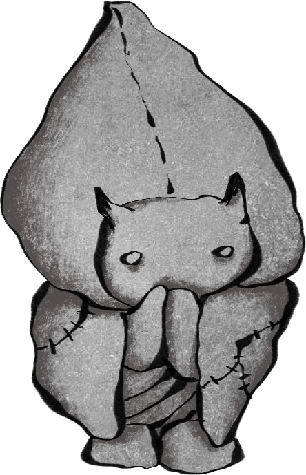
藏在鹅肠小巷里的铺子，推开木门又掀起珠帘，内里也并不大。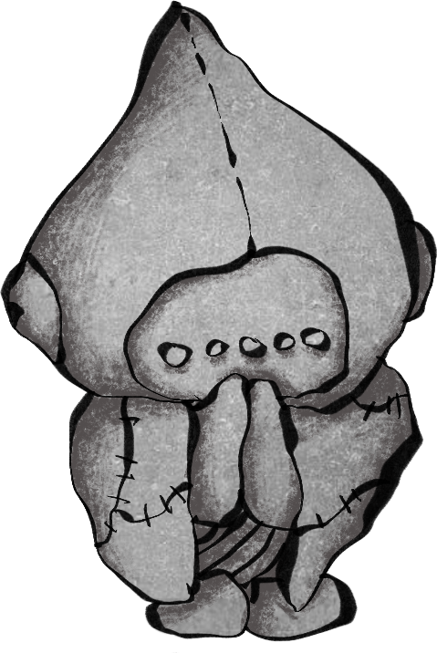
然而，却是五脏俱全。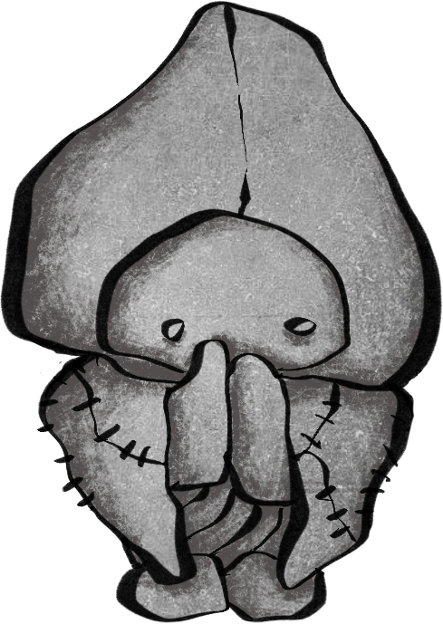
中国、日本、泰国、美国、佛教、基督教、印度教……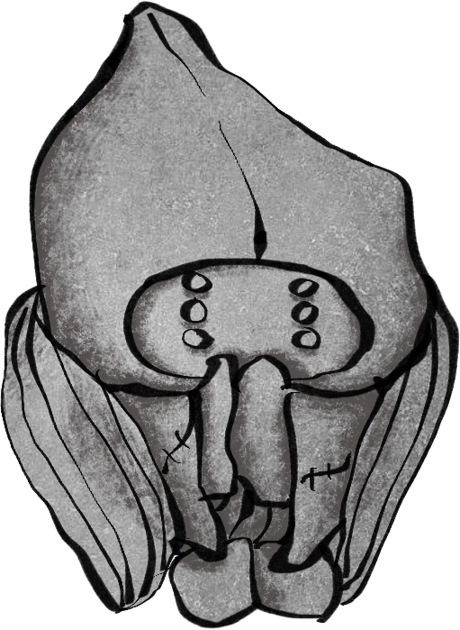
这么多各路神仙竟然蜗居在狭窄的架上，不留一丝空隙。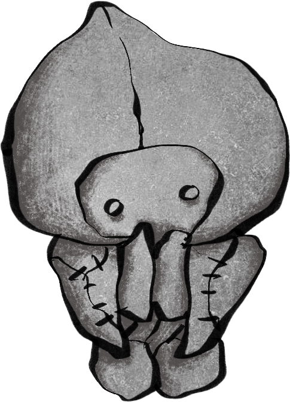
那么多双慈悲低垂的眼睛，走进去时，却一瞬间觉得所有目光都钉向了自己。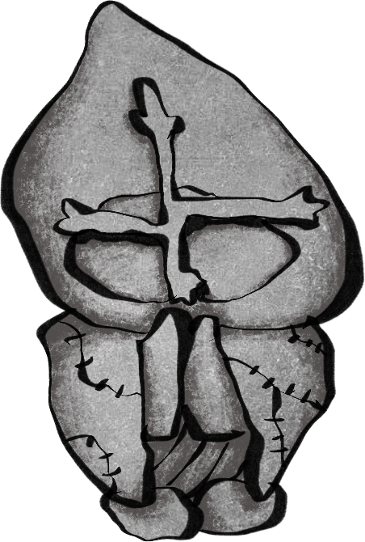
寒毛四起。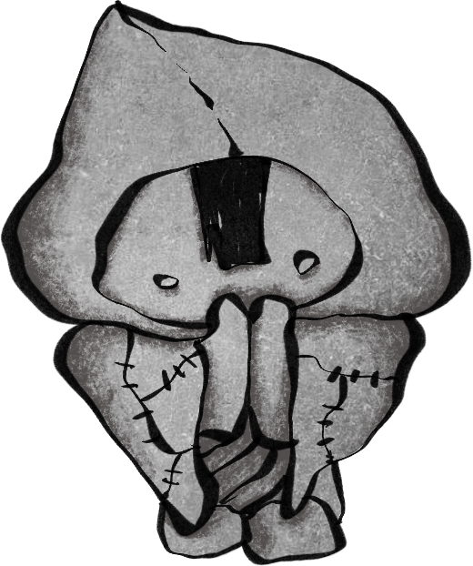
那孩子静坐在一些更大的神像之间，看起来，是一个残次品。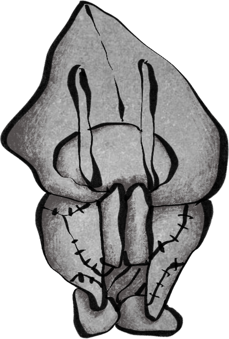
看上去是由石灰岩雕成，通体灰白斑驳，不反光。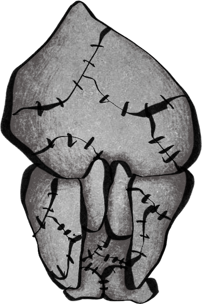
只静静地坐在那里。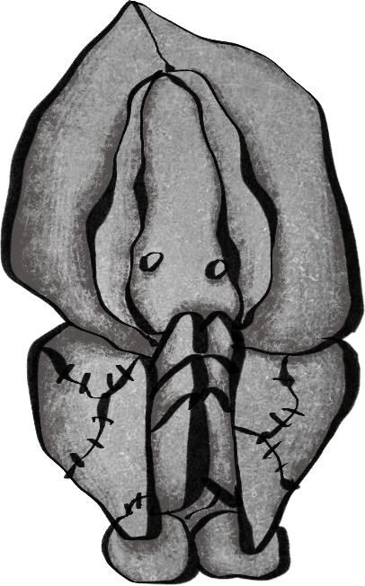
我怔了怔，向它走过去。胸口一阵钝痛。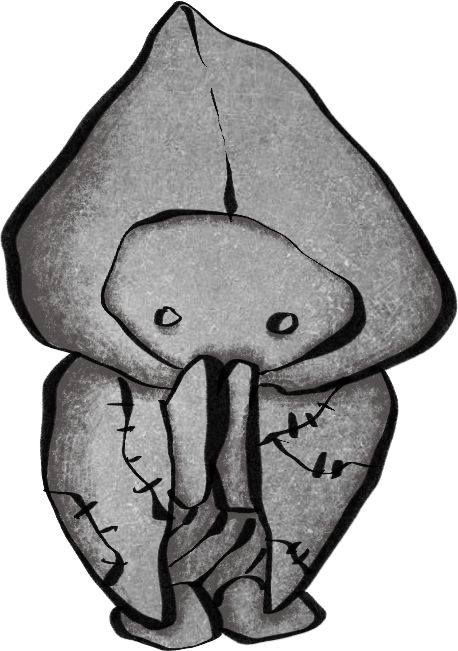
从近处端详，制这尊像的师傅是有一番手艺的。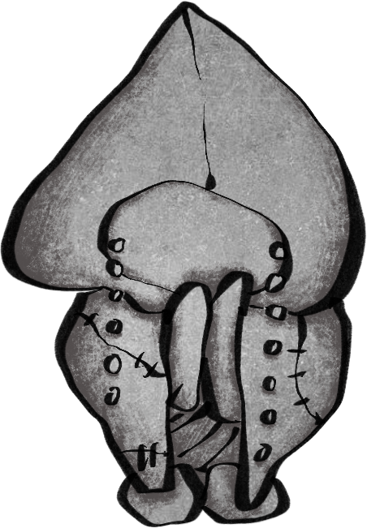
尽管并不精细也不是上等材料，仍然显出一张既天真、又悲悯的幼童的脸。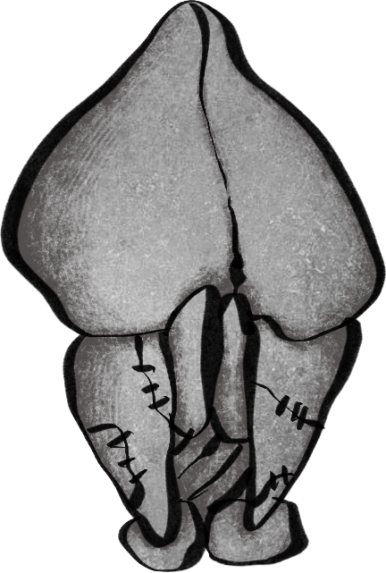
面露微笑，又似有隐隐绰绰的悲意。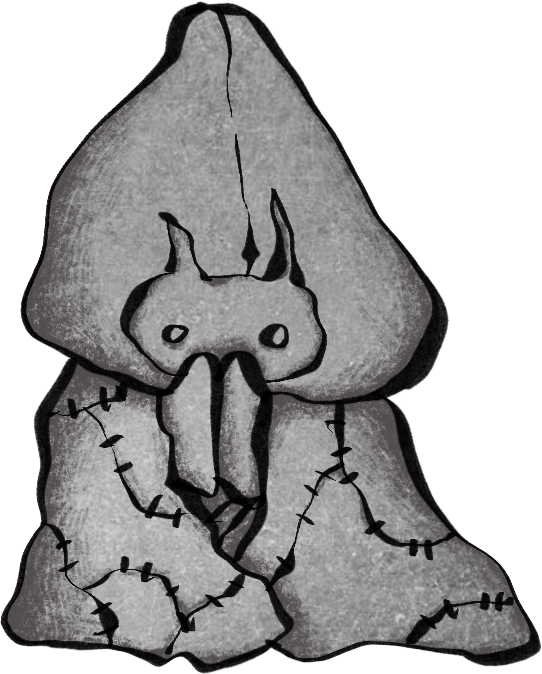
那双眼睛里，没有雕刻瞳仁。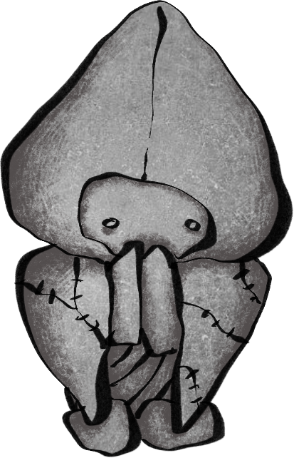
轻轻将这尊地藏捧了起来。有些沉重，像抱一个小娃娃。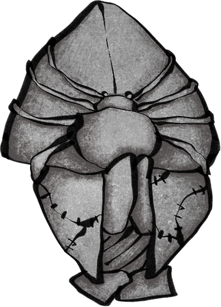
“这是地藏，知道么？是供奉夭折堕胎的婴灵用的。”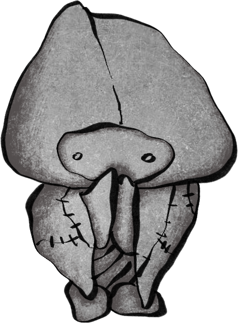
“没有错，是祂。”我不求功名，不求庇佑，惟愿你位列仙班，福泽深厚，从此不受苦痛。我愿长久供奉你以赎我的罪。我的孩子。
我以此童玩供奉，为求你家宅安宁，父母绕膝常睦，一生得亲眷环绕，无孤无寂，平顺安然。
我以此花枝供奉，为求你得偿所愿，与心上人终得相守，再无离散之苦。不必割舍，不必放手。
我以此灯笼供奉，为求你身体康健无恙，一生无病无灾，顺遂平安。
我以此甘味供奉，为求你衣食无忧，有所栖止，不为钱财所困，不为生计所忧，安然度日。
我以此风车供奉，为求你身心自然无所拘束，能自珍自重，如视己为珍宝，不为世事所缚，不为尘缘所累。
我以此螺供奉，为求你才能出众，光华自显，不作旁人之影，终为自身而立，亦为世所珍。
ROOM 03
第三扇门
独立场景内容待接入
孩子，我的孩子。
从此以后，你只有我一个亲人。
你会孤单吗？
可是，我要告诉你，亲人并不总是让人幸福。
我有一位父亲。可是，我的父亲带给我的惟有苦痛。
我会好好地陪伴你，为你超度供奉，使你化作地藏，为菩萨神明所保佑。